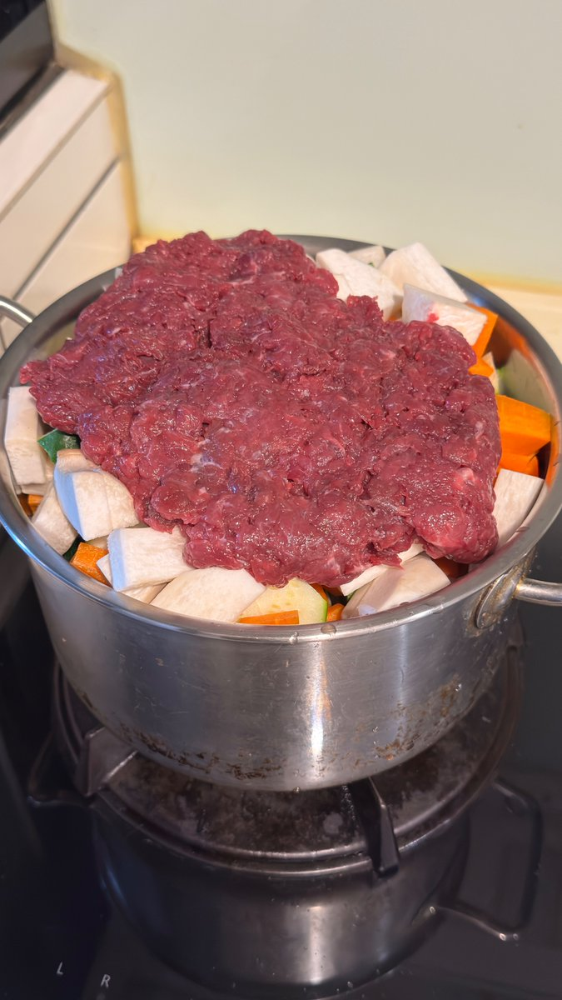

CoFfffEeeeE
@CoFfffEeeeE1
@JF1213952A 牛蕃茄是什麽蕃茄，就是普通蕃茄吗

JF/小鳥一人
@JF1213952A
在某音上面看到一個日本人煮「無水咖哩」而且是那種超簡單無腦煮法，牛蕃茄、茄子、金針菇、牛絞肉加上咖哩粉，順序放在深鍋中，蓋上蓋子就好了。
我考慮到小孩不吃茄子，所以就是牛蕃茄、洋蔥、杏鮑菇、紅蘿蔔、節瓜、牛絞肉，無腦丟進鍋中，等待全部軟化出水之後，再加咖哩粉與白味噌。等著瞧。 https://t.co/3J5qYYnS8q